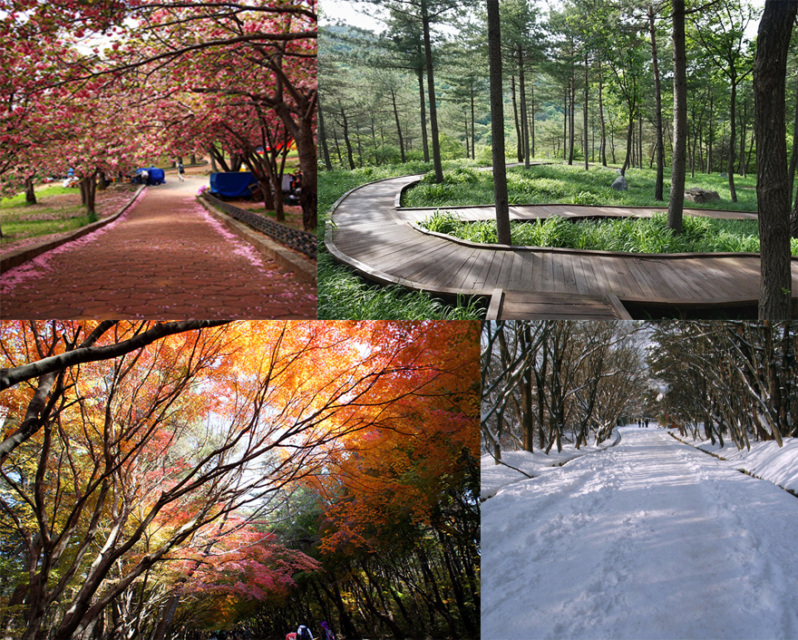

유네스코 문화유산인 불국사와 석굴암을 품고 있는 경주 토함산 자연휴양림이 사계절 힐링과 심신치유의 명소로 큰 인기를
끌고 있다. 경주시가 운영하는 토함산자연휴양림은 토함산 동쪽기슭 121㏊의 산림에 23개 동의 숙박시설과 40개의 야영
데크 및 체육시설을 갖추고 있으며, 울창한 숲속을 따라 조성된 산책로와 숲 체험장, 숲 놀이터, 숲 해설프로그램 등 힐링
의 동반자인 숲을 활용한 다양한 체험활동이 가능해 가족단위 이용객에게 큰 호응을 얻고 있다.
또 다양한 침엽수와 활엽수가 자생하고 있고, 다람쥐와 딱따구리 등 각종 야생동물도 볼 수 있어 생태계를 활용한 자연체험
학습장과 휴양지로 각광받고 있으며, 연중무휴로 운영되는 데다 23개 실의 숙박시설 숲속의 집과 40개의 야영 데크, 숲 체
험장 등 다양한 힐링 공간이 마련돼 있어 캠핑 족이나 가족 단위 이용객에게 큰 인기를 끌고 있다.